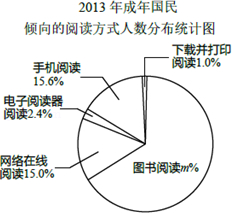

2014年北京市中考数学试题 · 数学解答题 第20题
20．（5分）（2014•北京）根据某研究院公布的2009～2013年我国成年国民阅读调查报告的部分相关数据，绘制的统计图表如下：
2009～2013年成年国民年人均阅读图书数量统计表
年份 | 年人均阅读图书数量（本） |
2009 | 3.88 |
2010 | 4.12 |
2011 | 4.35 |
2012 | 4.56 |
2013 | 4.78 |
根据以上信息解答下列问题：
（1）直接写出扇形统计图中m的值；
（2）从2009到2013年，成年国民年人均阅读图书的数量每年增长的幅度近似相等，估算2014年成年国民年人均阅读图书的数量约为 本；
（3）2013年某小区倾向图书阅读的成年国民有990人，若该小区2014年与2013年成年国民的人数基本持平，估算2014年该小区成年国民阅读图书的总数量约为 本．
